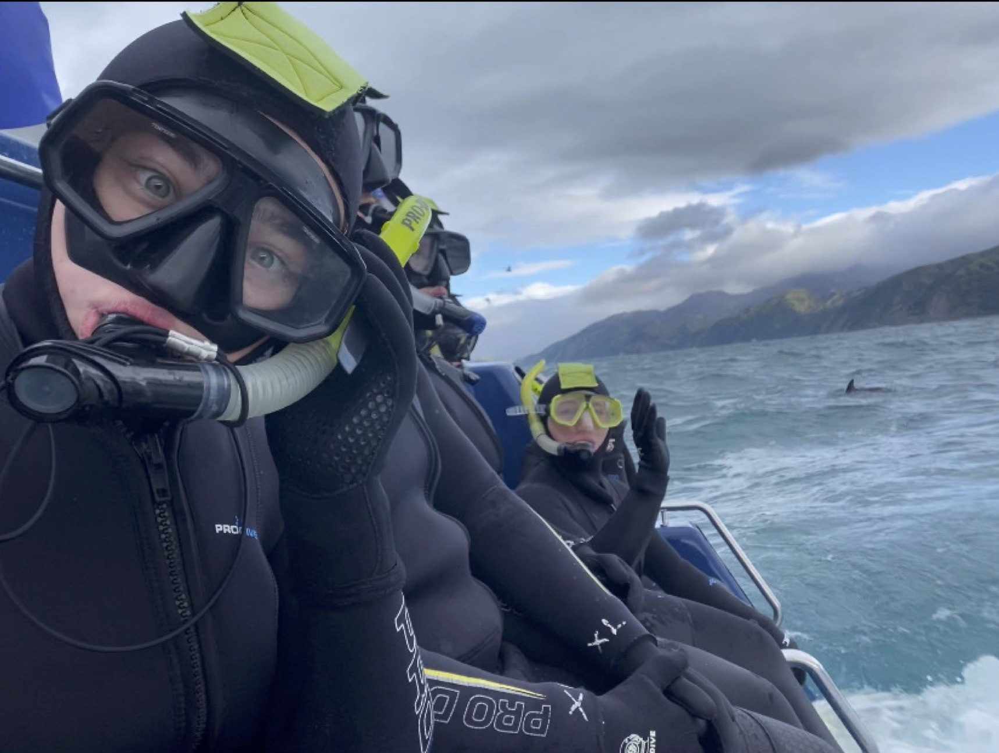

International Experience
Australia – Kuranda & Skybury (Penn State Maymester)

During my Penn State Maymester in Australia, I had the privilege of visiting Kuranda, a village tucked within the world's oldest rainforest. The lush scenery and unique biodiversity offered an unforgettable lesson in environmental preservation and the fragile balance of tropical ecosystems. This experience deepened my appreciation for global conservation efforts and the human connection to nature’s history.
Our group also visited Skybury Café, a sustainable coffee producer committed to net-zero operations. Touring their facilities offered insight into how environmentally-conscious agricultural practices can be woven into profitable business models. It was a firsthand look at how climate-aware entrepreneurship can create a ripple effect through local economies and ecosystems.
New Zealand – Kaikoura, Kathmandu HQ, and More
New Zealand offered an incredible mix of adventure and education. In Kaikoura, I swam alongside wild dolphins, connecting with marine life in a way that deepened my understanding of oceanic ecosystems and the importance of protecting these species. This immersive experience also emphasized the role of ecotourism in supporting conservation-based communities.
At Kathmandu’s headquarters, we explored how sustainability is built into corporate DNA—from ethical sourcing to long-term impact tracking. Our visit to Parliament provided a fascinating comparison of democratic processes and civic engagement in New Zealand versus the U.S. We also toured the WikiHouse workshop, where we learned how modular, community-driven building techniques offer innovative and sustainable solutions to global housing challenges. These designs integrate environmental, social, e...
Belize – Bella Vista (Mission Trip)
Through Praying Pelican Missions, I traveled to Bella Vista, Belize, where we partnered with a local log church to serve the surrounding community. Throughout the week, we hosted a vibrant Vacation Bible School program, fostering joy, creativity, and connection with local children. Beyond spiritual education, our group led a clothing donation drive and distributed food packages to families in need. This experience taught me the true meaning of community support and showed how impactful service ...